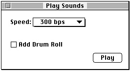

Legacy Document
Important: The information in this document is obsolete and should not be used for new development.
Important: The information in this document is obsolete and should not be used for new development.


Responding to Mouse Events in a Control
The Control Manager provides several routines to help you detect and respond to mouse events involving controls. For mouse events in controls, you generally perform the following tasks:
These and other routines for responding to events involving controls are described in the next several sections.
- In your event-handling code, use the Window Manager function
FindWindowto determine the window in which the mouse-down event occurred.- If the mouse-down event occurred in the content region of your application's active window, use the
FindControlfunction to determine whether the mouse-down event occurred in an active control and, if so, which control.- Call
TrackControlto handle user interaction for the control for as long as the user holds the mouse button down. For scroll arrows and the gray areas of scroll bars, you must define an action procedure forTrackControlto use. This action procedure should cause the document to scroll as long as the user holds down the mouse button. For pop-up menus, you passPointer(-1)in a parameter toTrackControlto
use the action procedure defined in the pop-up control definition function. For the scroll box in scroll bars and for the other standard controls, you passNILin a parameter toTrackControlto get the Control Manager's standard response to mouse-down events.- When
TrackControlreports that the user has released the mouse button with the cursor in a control, respond appropriately. This may require you to use other Control Manager routines, such asGetControlValueandSetControlValue, to determine and change control settings.
- Note
- The Dialog Manager procedure
ModalDialogautomatically callsFindWindow,FindControl, and TrackControlfor mouse-down events in the controls of alert and modal dialog boxes. You can use the Dialog Manager functionDialogSelect, which automatically callsFindWindow,FindControl, and TrackControl, to help you handle mouse events in your movable modal and modeless dialog boxes.
Determining a Mouse-Down Event in a Control
When your application receives a mouse-down event, use the Window Manager functionFindWindowto determine the window in which the event occurred. If the cursor was in the content region of your application's active window when the user pressed the mouse button, use theFindControlfunction to determine whether the mouse-down event occurred in an active control and, if so, which control.When the mouse-down event occurs in a visible, active control,
FindControlreturns a handle to that control as well as a part code identifying the control's part. (Note that when the mouse-down event occurs in an invisible or inactive control, or when the cursor is not in a control,FindControlsets the control handle toNILand returns 0 as its part code.)A simple control such as a button or checkbox might have just one "part"; a more complex control can have as many parts as are needed to define how the control operates. A scroll bar has five parts: two scroll arrows, the scroll box, and the two gray areas on either side of the scroll box. Figure 5-4 on page 5-7 shows the five parts of a scroll bar.
A part code is an integer from 1 through 253 that identifies a part of a control. To allow different parts of a multipart control to respond to mouse events in different ways, many of the Control Manager routines accept a part code as a parameter or return one as
a result. Part codes are assigned to a control by its control definition function. The standard control definition functions define the following part codes. Also listed are the constants you can use to represent them.The pop-up control definition function does not define part codes for pop-up menus. Instead (as explained in "Creating a Pop-Up Menu" beginning on page 5-22), your application should store the handles for your pop-up menus when you create them.
Your application should then test the handles you store against the handles returned
byFindControlbefore responding to users' choices in pop-up menus; this is described in more detail later in the next section.Listing 5-9 illustrates an application-defined procedure,
DoMouseDown, that an application might call in response to a mouse-down event. TheDoMouseDownroutine first calls the Window Manager functionFindWindow, which returns two values: a pointer to the window in which the mouse-down event occurred and a constant that provides additional information about the location of that event. IfFindWindowreturns theinContentconstant, then the mouse-down event occurred in the content area of one of the application's windows.Listing 5-9 Detecting mouse-down events in a window
PROCEDURE DoMouseDown (event: EventRecord); VAR part: Integer; thisWindow: WindowPtr; BEGIN {handle mouse-down event} part := FindWindow(event.where, thisWindow); CASE part OF inMenuBar: ; {mouse-down in menu bar, respond appropriately here} inContent: IF thisWindow <> FrontWindow THEN {mouse-down in an inactive window; use SelectWindow } { to make it active here} ELSE {mouse-down in the active window} DoContentClick(thisWindow, event); {handle other cases here} END; {of CASE statement} END; {DoMouseDown}In Listing 5-9, whenFindWindowreports a mouse-down event in the content region of a window containing controls,DoMouseDowncalls another application-defined procedure,DoContentClick, and passes it the window pointer returned by theFindWindow functionas well as the event record.Listing 5-10 shows an application-defined procedure,
DoContentClick, that uses this information to determine whether the mouse-down event occurred in a control.Listing 5-10 Detecting mouse-down events in a pop-up menu and a button
PROCEDURE DoContentClick (window: WindowPtr; event: EventRecord); VAR mouse: Point; control: ControlHandle; part: Integer; windowType: Integer; BEGIN windowType := MyGetWindowType(window); {get window type} CASE windowType OF kPlaySoundsModelessDialogBox: BEGIN SetPort(window); mouse := event.where; {get the mouse location} GlobalToLocal(mouse); {convert to local coordinates} part := FindControl(mouse, window, control); IF control = gSpeedPopUpControlHandle THEN {mouse-down in Modem Speed pop-up menu} DoPopUpMenu(mouse, control); CASE part OF inButton: {mouse-down in Play button} DoPlayButton(mouse, control); inCheckBox: {mouse-down in checkbox} DoDrumRollCheckBox(mouse, control); OTHERWISE ; END; {of CASE for control part codes} END; {of kPlaySoundsModelessDialogBox case} {handle other window types, such as document windows, here} END; {of CASE for window types} END; {of DoContentClick}Figure 5-15 shows the Play Sounds window;DoContentClickuses theFindControlfunction to determine whether the mouse-down event occurred in the pop-up menu, the Play button, or the Add Drum Roll checkbox.First, however,
DoContentClickuses the event record to determine the cursor location, which is specified in global coordinates. Because theFindControlfunction expects the cursor location in coordinates local to the window,DoContentClickuses the QuickDraw procedureGlobalToLocalto convert the point stored in thewhere field of the event record to coordinates local to the current window. TheGlobalToLocal procedure takes one parameter, a point in global coordinates--where the upper-left corner of the entire bit image is coordinate (0,0). See Inside Macintosh: Imaging for more information about the GlobalToLocal procedure.Figure 5-15 Three controls in a window

When it calls
FindControl, DoContentClick passes thecursor location in the window's local coordinates as well as the pointer returned earlier by theFindWindowfunction (shown in Listing 5-9 on page 5-29).If the cursor is in a control,
FindControlreturns a handle to the control and a part code indicating the control part. Because the pop-up control definition function does
not define control parts,DoContentClicktests the control handle returned byFindControlagainst a pop-up menu's control handle that the application stores
in its own global variable. If these are handles to the same control,DoContentClickcalls another application-defined routine,DoPopUpMenu.After checking whether
FindControlreturns a control handle to a pop-up menu,DoContentClickuses the part code thatFindControlreturns to determine whether the cursor is in one of the other two controls. IfFindControlreturns theinButtonconstant,DoContentClickcalls another application-defined routine,DoPlayButton. IfFindControlreturns theinCheckBoxconstant,DoContentClickcalls another application-defined routine,DoDrumRollCheckBox.As described in the next section, all three of these application-defined routines--
DoPopUpMenu,DoPlayButton, andDoDrumRollCheckBox--in turn use theTrackControlfunction to follow and respond to the user's mouse movements in
the control reported byFindControl.Tracking the Cursor in a Control
After using theFindControl function todetermine that the user pressed the mouse button when the cursor was in a control, use theTrackControlfunction first to follow and respond to the user's mouse movements, and then to determine which control part contains the cursor when the user releases the mouse button.Generally, you use
TrackControlafter using theFindControl function todetermine that the mouse-down event occurred in a control. You pass toTrackControlthe control handle returned by theFindControlfunction, and you also pass toTrackControl the same point you passed to FindControl(that is, a point in coordinates local to the window).The
TrackControlfunction follows the movements of the cursor in a control and provides visual feedback until the user releases the mouse button. The visual feedback given byTrackControldepends on the control part in which the mouse-down event occurred. When highlighting the control is appropriate--in a button, for example--TrackControlhighlights the control part (and removes the highlighting when the user releases the mouse button). When the user presses the mouse button while the cursor is in an indicator (such as the scroll box of a scroll bar) and then moves the mouse,TrackControlresponds by dragging a dotted outline of the indicator. Figure 5-8 on page 5-10 illustrates howTrackControlprovides visual feedback.You can also use an action procedure to undertake additional actions as long as the user holds down the mouse button. For example, if the user is working in a text document and holds down the mouse button while the cursor is in a scroll arrow, your action procedure should continuously scroll through the document one line (or some equivalent measure) at a time until the user releases the button or reaches the end of the document. You pass a pointer to this procedure to
TrackControl. ("Scrolling in Response to Events in Scroll Arrows and Gray Areas" beginning on page 5-52 describes how to do this.)The
TrackControlfunction returns the control's part code if the user releases
the mouse button while the cursor is inside the control part, or 0 if the user releases the mouse button while the cursor is outside the control part. UnlessTrackControlreturns 0 as its function result, your application should then respond as appropriate to
a mouse-up event in that control part. WhenTrackControlreturns 0 as its function result, your application should do nothing.Listing 5-11 on the next page shows an application-defined procedure,
DoPlayButton, that usesTrackControlto track mouse-down events in the Play button shown in Figure 5-15. TheDoPlayButtonroutine passes, toTrackControl, the control handle returned byFindControl. TheDoPlayButtonroutine also passes toTrackControl the same cursor location it passed to FindControl(that is, a point in local coordinates). Because buttons don't need an action procedure,NILis passed as the final parameter
toTrackControl.Listing 5-11 Using the
TrackControlfunction with a button
PROCEDURE DoPlayButton (mouse: Point; control: ControlHandle); BEGIN IF TrackControl(control, mouse, NIL) <> 0 THEN {user clicks Play} BEGIN IF gPlayDrumRoll = TRUE THEN {user clicked Play Drum Roll checkbox } DoPlayDrumRoll; { so play a drum roll first} SysBeep(30); {always play system alert sound when user clicks Play} END; END;When the user presses the mouse button when the cursor is in the Play button,TrackControlinverts the Play button. If the user releases the mouse button after moving the cursor outside the control part,TrackControlstops inverting the
button and returns the value 0, in which caseDoPlayButtondoes nothing.If, however, the user releases the mouse button with the cursor in the Play button,
TrackControlstops inverting the Play button and returns the value for theinButtonconstant. ThenDoPlayButtoncalls the Sound Manager procedureSysBeepto play the system alert sound (which is described in the chapter "Dialog Manager" in this book). Before releasing the mouse button, the user can move the cursor away from the control part and then return to it, andTrackControlwill still return the part code when the user releases the mouse button.For buttons, checkboxes, radio buttons, and the scroll box in a scroll bar, your application typically passes
NILtoTrackControlto use no action procedure. However,TrackControlstill responds visually to mouse events in active controls. That is, when the user presses the mouse button with the cursor over a control whose action procedure is set toNIL,TrackControlchanges the control's display appropriately until the user releases the mouse button.For scroll arrows and for the gray areas of a scroll box, you need to define your own action procedures. You pass a pointer to the action procedure as one of the parameters to
TrackControl, as described in "Scrolling in Response to Events in Scroll Arrows and Gray Areas" beginning on page 5-52.For a pop-up menu, you must pass
Pointer(-1)toTrackControlfor its action procedure; this causesTrackControlto use the action procedure defined in the pop-up control definition function.Listing 5-10 on page 5-30 calls an application-defined routine,
DoPopUpMenu, whenFindControlreports a mouse-down event in a pop-up menu. Listing 5-12 shows howDoPopUpMenuusesTrackControlto handle user interaction in the pop-up menu. By passingPointer(-1) toTrackControl,DoPopUpMenuuses the action procedure defined in the pop-up control definition function.Listing 5-12 Using
TrackControlwith a pop-up menu
PROCEDURE DoPopUpMenu (mouse: Point; control: ControlHandle); VAR menuItem: Integer; part: Integer; BEGIN part := TrackControl(control, mouse, Pointer(-1)); menuItem := GetControlValue(control); IF menuItem <> gCurrentItem THEN BEGIN gCurrentItem := menuItem; SetMyCommunicationSpeed; {use speed stored in gCurrentItem} END; END; {of DoPopUpMenu}The action procedure for pop-up menus highlights the pop-up menu title, displays the pop-up menu, and handles all user interaction while the user drags up and down the menu. When the user releases the mouse button, the action procedure closes the pop-up box, draws the user's choice in the pop-up box (or restores the previous item if the user doesn't make a new choice), and removes the highlighting of the pop-up title. The pop-up control definition function then changes the value of thecontrlValuefield of the control record to the number of the menu item chosen by the user.Because buttons do not retain settings, responding to them is very straightforward: when the user clicks a button, your application should immediately undertake the action described by the button's title. For pop-up menus and other types of controls, you must determine their current settings before responding to the user's action. For example, before responding, you need to know which item the user has chosen in a pop-up menu, whether a checkbox is checked, or how far the user has moved the scroll box. The action you take may, in turn, involve changing other control settings. Determining and changing control settings are described in the next section.
After learning how to determine and change control settings, see "Scrolling Through a Document" beginning on page 5-40 for a detailed discussion of how to respond to mouse events in scroll bars.